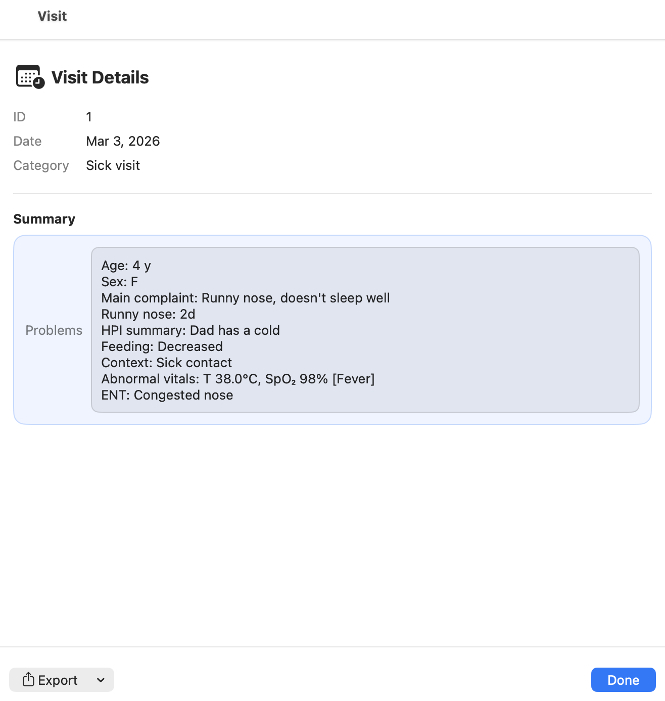

Episode summary (visit details)
This page explains the Episode summary screen (also called Visit details) for a sick visit in CareFlow Kids.
The episode summary is the clinician-facing, read-only overview of the visit, and it is also the entry point for exporting a report for that specific episode.
How to open the episode summary
- Open the patient bundle.
- Go to the visit list.
- Click the Details button for the visit you want to review.
This opens Visit details for the selected episode.
What the episode summary shows
The summary view displays key information such as:
- episode ID
- visit date
- visit category (sick visit)
- the generated problem / summary block
The Problems / Summary block is a compact clinical synthesis built from the structured data recorded during the visit.
It typically includes:
- patient age and sex
- main complaint(s)
- duration (if recorded)
- key history and context items
- relevant examination findings
This gives a fast overview of the episode without reopening the full episode form.
Exporting a report for the episode
From the episode summary screen, you can export a report for this specific visit.
- Click Export.
- Choose the desired format:
- PDF (print-friendly)
- DOCX (editable)
- Save or share the generated report.
Reports are generated on demand from the structured data stored in the database.
They are not stored as static files inside the .pemr bundle.
Typical use cases
Export a visit report when you need:
- a shareable summary for parents
- a document for school or childcare
- a clean clinical note for your own archive
Screenshots
Screenshot (TODO)
